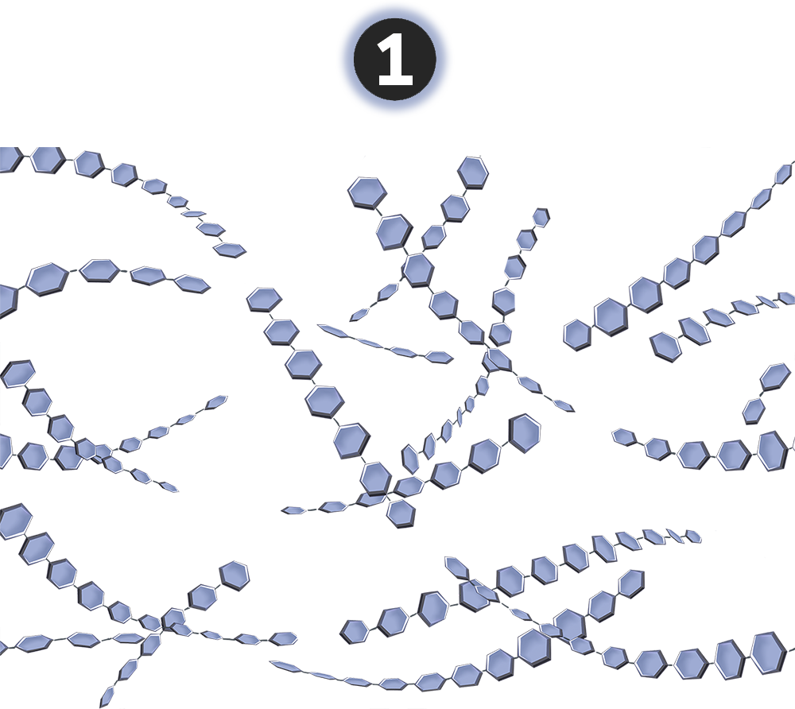
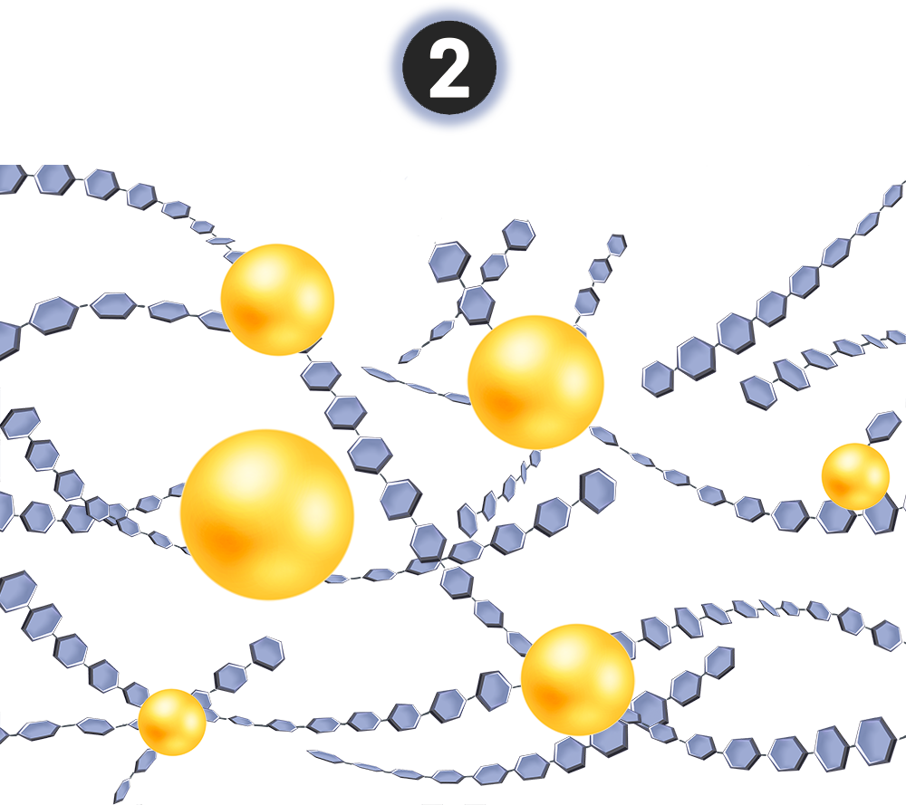
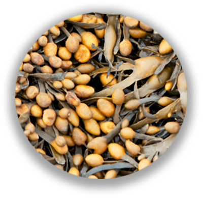
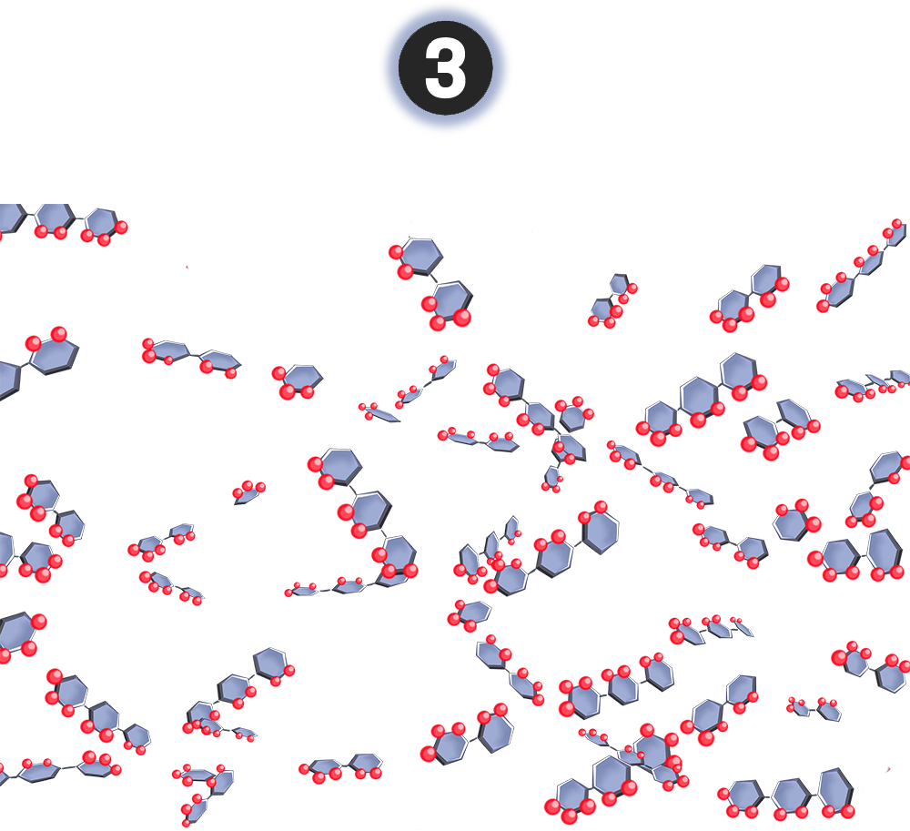
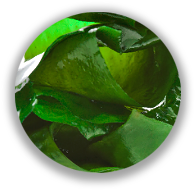

Brightum,
The essence of marine glycobiology
A unique blend crystalized after decades of
advance in marine glycobiology. Brightum harness the power of
marine-derived sacchirdes to revive, revitalize and rejuvenate skin.

Significant improvment of skin complexion
was observed in the clinical studies.
Epidermis renewal doubled in just 4 days*
95% observed improvement of skin hydration*

88% observed increase of skin clarity*

75% observed visibly softer skin*
70% observed improvement to deep wrinkles*
63% observed decrease of skin pigmentation*

Inspired by a unique symbiosis
between Gigartina seaweed and its co-habited microbes, a
unique hydrolytic process is created to produce one-of-a-kind
oligosaccharides from Gigartina seaweed extract.

By using a unique extraction process,
stable, bioactive and marine antioxidant – enriched HMW (high
molecular weight) fucoidans are obtained from Ascophyllum seaweed.



The anti-aging benefit of fucoidans
is directly related to the degree of their sulfate content.
Unlike fucoidan extracted from other seaweeds, fucoidan
extracted from Laminaria (Kelp) in the Iroise sea is uniquely
enriched with sulfate content. By using a unique extraction
process, highly sulfated oligo-fucoidans are obtained.
